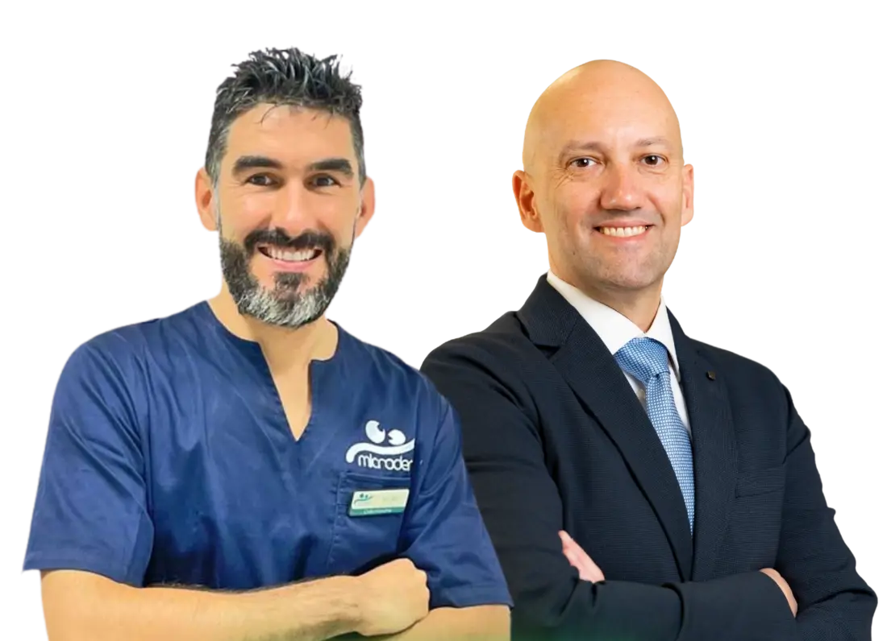
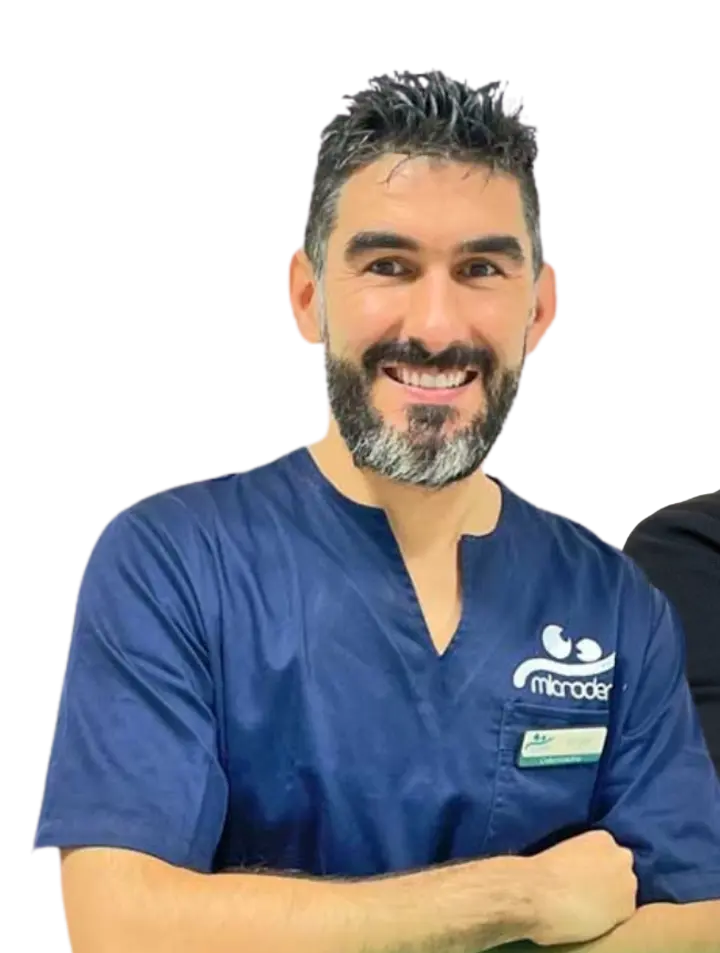
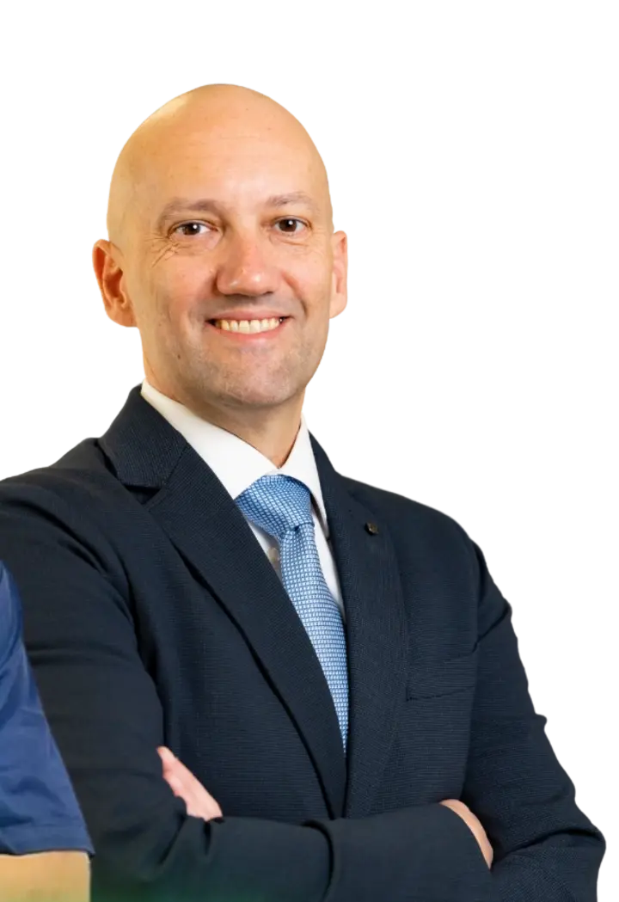
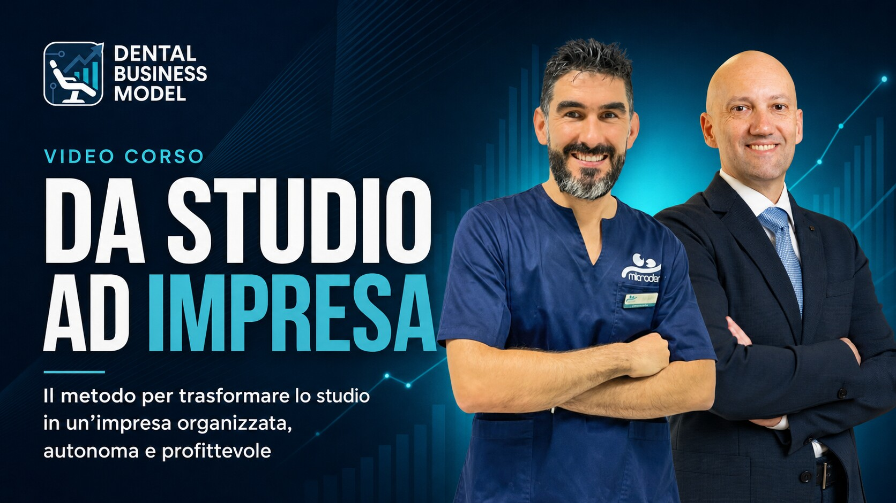
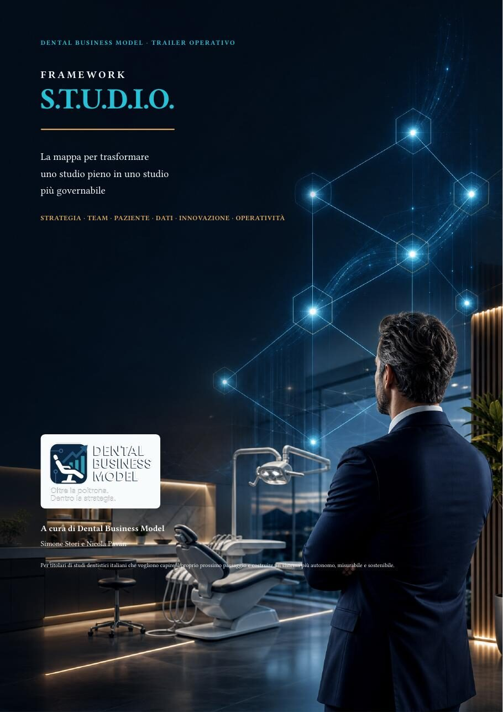
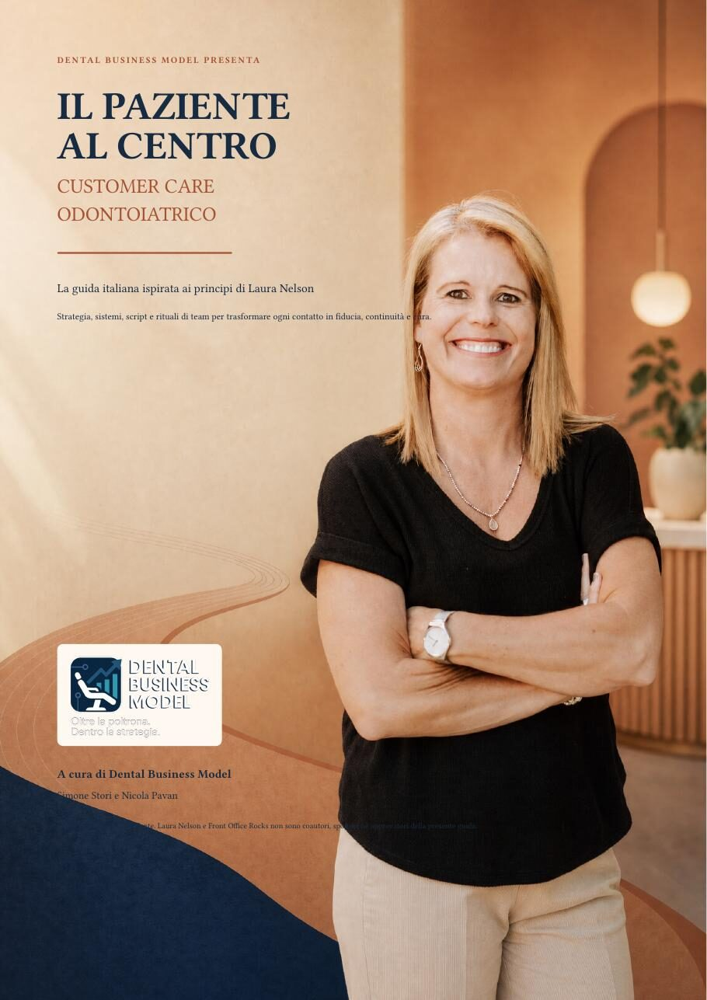
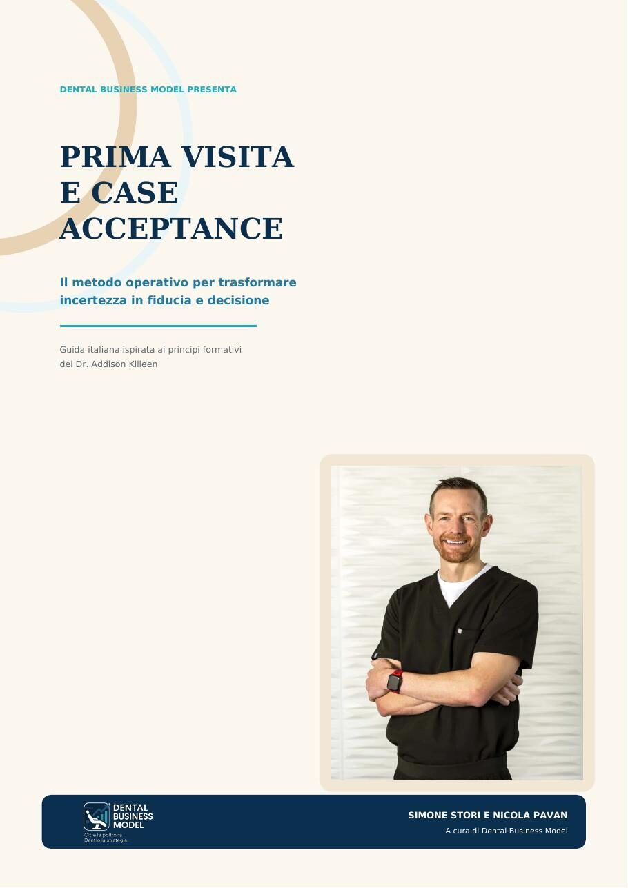
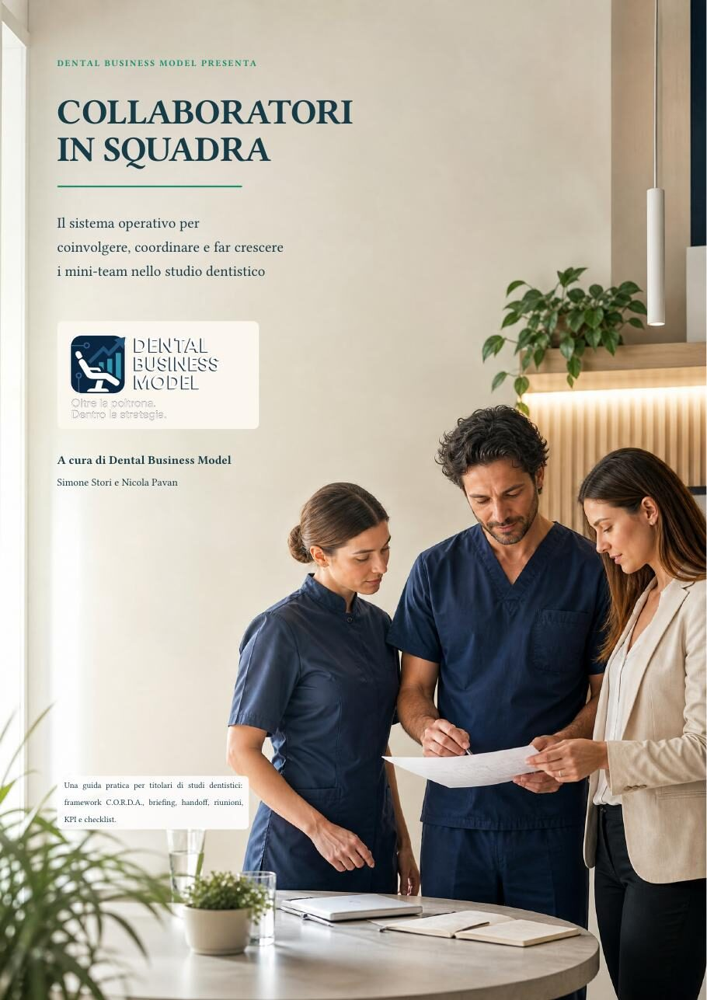
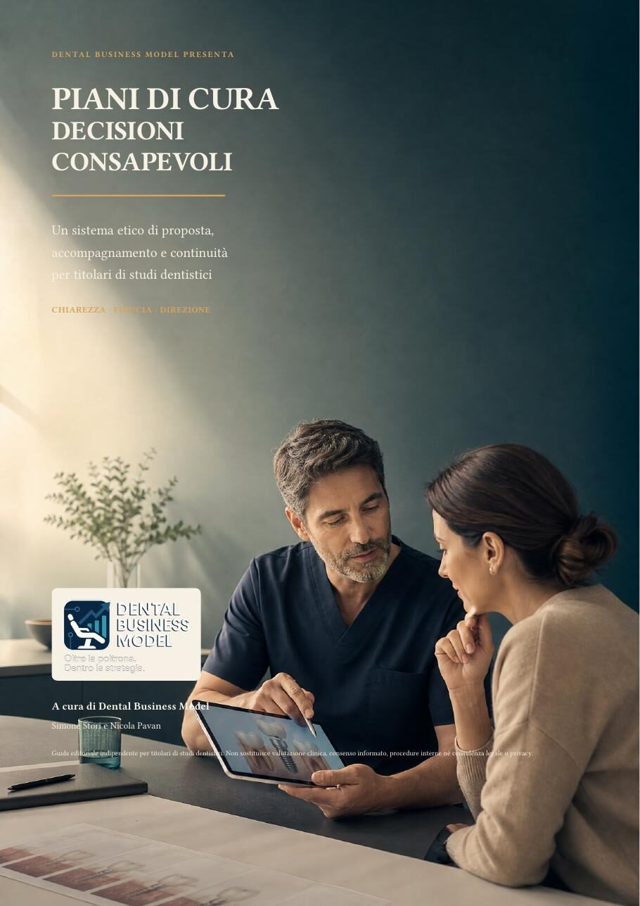

Tutto torna al titolare
Decisioni, conferme, problemi e priorità continuano ad arrivare sulla tua scrivania.
Webinar gratuito live su Zoom
Scopri il Metodo S.T.U.D.I.O. per costruire uno studio dentistico più produttivo, più organizzato e meno dipendente dalla tua presenza continua.
Con Simone Stori e Nicola Pavan · Accesso gratuito previa registrazione

Il vero collo di bottiglia
La crescita è reale solo quando il sistema cresce insieme allo studio.
Decisioni, conferme, problemi e priorità continuano ad arrivare sulla tua scrivania.
Essere occupati non significa necessariamente produrre nel modo più utile.
I dati esistono, ma manca un cruscotto che mostri cosa sta succedendo e perché.
Marketing, prima visita, preventivo, cura e richiamo funzionano ancora come mondi separati.
Il metodo proprietario
Non esiste una leva isolata che trasforma uno studio. Il Metodo S.T.U.D.I.O. collega le aree che troppo spesso vengono gestite separatamente e ti aiuta a capire dove intervenire prima.
Direzione, modello di business, posizionamento e priorità per i prossimi anni.
Leadership, responsabilità e delega per passare da un gruppo a una squadra.
Un percorso coerente dal primo contatto fino alla cura, al richiamo e al passaparola.
I numeri che guidano davvero produzione, agenda, conversione e marginalità.
AI, CRM e automazioni applicati a processi reali, senza aggiungere altro caos.
Procedure, riunioni e sistemi di controllo che trasformano le idee in esecuzione.
In 60 minuti
Partiremo da casi reali per aiutarti a individuare il collo di bottiglia e la priorità con il maggiore impatto nei prossimi 90 giorni.
Una storia vera, non un modello teorico
Il metodo che presenteremo non nasce da una raccolta di slide. Nasce dall’incontro tra un dentista che stava facendo crescere una struttura sempre più complessa e un manager capace di trasformare visione, numeri e persone in un sistema governabile.

Simone Stori · Il punto di vista del titolareCapitolo 01 · La crescita
Quando ho fondato Microdent, il mio centro era soprattutto la clinica: curare bene, investire in tecnologia e costruire un’esperienza diversa per il paziente.
Poi lo studio ha iniziato a crescere. Più pazienti, più collaboratori, più specialità, più marketing e più opportunità. Ma insieme alla crescita è arrivata una complessità nuova: l’agenda, i numeri, il team, i preventivi, la comunicazione e le decisioni continuavano a convergere su di me.
Ho capito che essere un buon clinico e guidare un’organizzazione sono due mestieri diversi. Uno studio può lavorare molto, avere un team valido e continuare comunque a dipendere troppo dal titolare.

Nicola Pavan · Il punto di vista del managerCapitolo 02 · L’incontro
Nicola ha portato ciò che spesso manca al titolare: uno sguardo esterno, manageriale e ostinatamente orientato all’implementazione.
Ci ha aiutati a leggere meglio i numeri, separare le vere priorità dalle urgenze, rendere esplicite le responsabilità e trasformare idee sparse in progetti verificabili. Non una consulenza rimasta sulla carta, ma un lavoro entrato nelle riunioni, nell’agenda, nei processi e nel modo di prendere decisioni.
In meno di due anni Microdent è passata da 1,9 a 2,6 milioni di euro di fatturato, superando i 400.000 euro per poltrona e il 25% di utile.
Capitolo 03 · Il metodo
Simone porta la realtà della clinica, del paziente, dell’innovazione e del titolare. Nicola porta numeri, controllo, organizzazione e implementazione. Il Metodo S.T.U.D.I.O. è il punto in cui queste due prospettive diventano un unico sistema.
Strategia senza esecuzione è teoria.
Esecuzione senza strategia è caos.
Inclusi con l’iscrizione
Strumenti costruiti perché servono davvero negli studi e messi a disposizione degli iscritti al webinar.

Un percorso in otto moduli per leggere lo studio attraverso visione, modello di business, numeri, team, patient journey, prima visita, processi, AI e automazioni.

Le sei dimensioni del metodo, quattro stadi evolutivi, micro-esperimenti e un audit di 20 minuti per individuare il prossimo collo di bottiglia.

Strategia, comportamenti, script e rituali per rendere ogni contatto più coerente: dalla prima telefonata al follow-up e al mantenimento.

Il framework V.I.S.I.T.A. per ridurre l’incertezza, rendere visibile la diagnosi e accompagnare una decisione chiara, libera e consapevole.

Il framework C.O.R.D.A. per costruire mini-team, briefing, handoff, responsabilità, riunioni brevi e KPI che migliorano il sistema.

Un sistema etico di proposta e continuità: modello P.A.S.S.A.G.G.I.O., gestione dei dubbi, handoff e piano di implementazione 30-60-90.
La domanda da cui partiremo
Al tuo ritorno troveresti uno studio che ha continuato a crescere o uno studio che ha semplicemente aspettato te?
Una nota importante
Se hai già un Clinic Manager, un responsabile di segreteria o una figura organizzativa di riferimento, valuta di far partecipare anche lui o lei.
Il cambiamento accelera quando titolare e manager comprendono la stessa logica, condividono numeri e priorità e il lunedì successivo possono iniziare a lavorare senza dover prima “spiegare il corso”.
Riserva il tuo posto
Una diretta gratuita su Zoom con Simone Stori e Nicola Pavan. La sala è limitata a 100 partecipanti per mantenere la serata concreta e interattiva.
Compila il modulo per ricevere il link Zoom e i materiali riservati.
Domande frequenti
Sì. La partecipazione alla diretta del 26 ottobre è completamente gratuita previa registrazione.
Online, in diretta su Zoom. Riceverai il link di partecipazione all’indirizzo email indicato nel modulo.
La durata prevista è di 60 minuti.
Sì. Molti dei problemi più interessanti emergono proprio quando lo studio cresce e aumenta la complessità organizzativa.
Sì, ed è consigliato. Titolare e figura manageriale potranno leggere lo stesso modello da due prospettive complementari.
Sì. Gli iscritti riceveranno il videocorso “Da Studio a Impresa”, la mappa del Metodo S.T.U.D.I.O. e quattro guide operative Dental Business Model.
Sì. Al termine spiegheremo brevemente come continuare il percorso con Dental Business Model. La parte principale resterà dedicata al metodo, agli strumenti e ai casi concreti.
Ultima domanda
Scopriamo insieme come rendere il tuo studio più leggibile, organizzato, produttivo e governabile.
Riserva ora il tuo posto gratuito